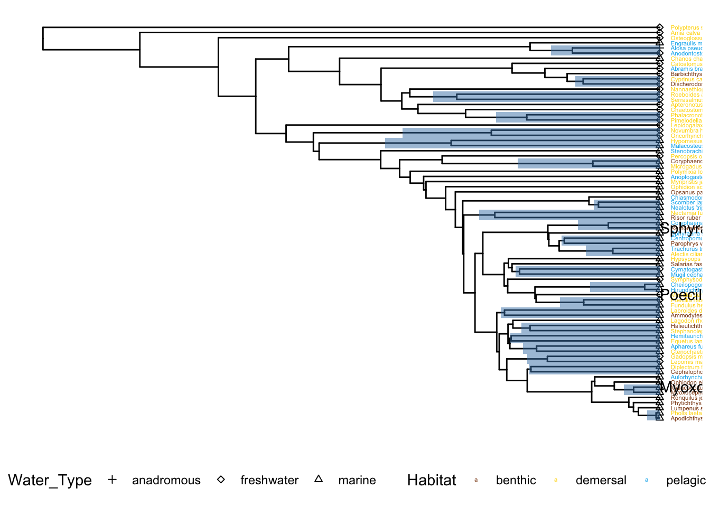

Last updated: 2022-04-11
Checks: 7 0
Knit directory: Code/
This reproducible R Markdown analysis was created with workflowr (version 1.7.0). The Checks tab describes the reproducibility checks that were applied when the results were created. The Past versions tab lists the development history.
Great! Since the R Markdown file has been committed to the Git repository, you know the exact version of the code that produced these results.
Great job! The global environment was empty. Objects defined in the global environment can affect the analysis in your R Markdown file in unknown ways. For reproduciblity it’s best to always run the code in an empty environment.
The command set.seed(20211230) was run prior to running the code in the R Markdown file. Setting a seed ensures that any results that rely on randomness, e.g. subsampling or permutations, are reproducible.
Great job! Recording the operating system, R version, and package versions is critical for reproducibility.
Nice! There were no cached chunks for this analysis, so you can be confident that you successfully produced the results during this run.
Great job! Using relative paths to the files within your workflowr project makes it easier to run your code on other machines.
Great! You are using Git for version control. Tracking code development and connecting the code version to the results is critical for reproducibility.
The results in this page were generated with repository version e47dde2. See the Past versions tab to see a history of the changes made to the R Markdown and HTML files.
Note that you need to be careful to ensure that all relevant files for the analysis have been committed to Git prior to generating the results (you can use wflow_publish or wflow_git_commit). workflowr only checks the R Markdown file, but you know if there are other scripts or data files that it depends on. Below is the status of the Git repository when the results were generated:
Ignored files:
Ignored: .DS_Store
Ignored: .Rhistory
Ignored: .Rproj.user/
Ignored: Flexibility Comparisons.nb.html
Ignored: Main.nb.html
Ignored: PGLS.FullData.nb.html
Ignored: PGLSforeachMeasFeature.nb.html
Ignored: PGLSwithPCA_Dims.nb.html
Ignored: PreppedVertMeas.nb.html
Ignored: ProcessCymatogasterFiles.nb.html
Ignored: ProcessFCSVfiles.nb.html
Ignored: TestingHabitatwithFriedmanData.nb.html
Ignored: Trilok_tree.nb.html
Ignored: VertLM.nb.html
Ignored: VertMeasLDA_Attempt.nb.html
Ignored: VertPGLS.nb.html
Ignored: VertPairs.nb.html
Ignored: analysis/.DS_Store
Ignored: analysis/10-VertLM.nb.html
Ignored: analysis/20-plot_phylogeny.nb.html
Ignored: analysis/21-plot_fits_and_summary.nb.html
Ignored: analysis/CheckSpeciesMatch.nb.html
Ignored: caper_test.nb.html
Ignored: data/.DS_Store
Ignored: ggtree_attempt.nb.html
Ignored: plot_example_data.nb.html
Ignored: plot_fits_and_summary.nb.html
Ignored: plot_phylogeny.nb.html
Ignored: renv/library/
Ignored: renv/staging/
Ignored: summarize_vert_meas.nb.html
Ignored: test_phylogeny.nb.html
Ignored: test_vertebraspace.nb.html
Ignored: vert_evol.Rproj
Untracked files:
Untracked: Main.html
Untracked: ProcessFCSVfiles.Rmd
Untracked: VertPGLS.html
Untracked: gg_saver.R
Untracked: output/BodyDistribution.pdf
Untracked: output/MasterVert_Measurements.csv
Untracked: output/mean_d_alphaPos_CBL.pdf
Untracked: output/pair_plot.pdf
Untracked: output/plot_example_data_figure.pdf
Untracked: output/stats_table.rtf
Untracked: plot_fits_and_summary.Rmd
Untracked: summarize_vert_meas.html
Untracked: testtree.csv
Untracked: vert_tree.csv
Note that any generated files, e.g. HTML, png, CSS, etc., are not included in this status report because it is ok for generated content to have uncommitted changes.
These are the previous versions of the repository in which changes were made to the R Markdown (analysis/20-plot_phylogeny.Rmd) and HTML (docs/20-plot_phylogeny.html) files. If you’ve configured a remote Git repository (see ?wflow_git_remote), click on the hyperlinks in the table below to view the files as they were in that past version.
| File | Version | Author | Date | Message |
|---|---|---|---|---|
| Rmd | 23908bd | Eric Tytell | 2021-12-30 | Test site build again |
| Rmd | edeae3c | Eric Tytell | 2021-12-30 | Rename notebooks to indicate order |
library(tidyverse)── Attaching packages ─────────────────────────────────────── tidyverse 1.3.1 ──✓ ggplot2 3.3.5 ✓ purrr 0.3.4
✓ tibble 3.1.4 ✓ dplyr 1.0.7
✓ tidyr 1.1.3 ✓ stringr 1.4.0
✓ readr 2.0.1 ✓ forcats 0.5.1── Conflicts ────────────────────────────────────────── tidyverse_conflicts() ──
x dplyr::filter() masks stats::filter()
x dplyr::lag() masks stats::lag()library(ggbeeswarm)
library(phytools)Loading required package: apeLoading required package: maps
Attaching package: 'maps'The following object is masked from 'package:purrr':
maplibrary(patchwork)
library(here)here() starts at /Users/etytel01/Documents/Vertebrae/Codelibrary(ggtree)ggtree v3.0.2 For help: https://yulab-smu.top/treedata-book/
If you use ggtree in published research, please cite the most appropriate paper(s):
1. Guangchuang Yu. Using ggtree to visualize data on tree-like structures. Current Protocols in Bioinformatics, 2020, 69:e96. doi:10.1002/cpbi.96
2. Guangchuang Yu, Tommy Tsan-Yuk Lam, Huachen Zhu, Yi Guan. Two methods for mapping and visualizing associated data on phylogeny using ggtree. Molecular Biology and Evolution 2018, 35(12):3041-3043. doi:10.1093/molbev/msy194
3. Guangchuang Yu, David Smith, Huachen Zhu, Yi Guan, Tommy Tsan-Yuk Lam. ggtree: an R package for visualization and annotation of phylogenetic trees with their covariates and other associated data. Methods in Ecology and Evolution 2017, 8(1):28-36. doi:10.1111/2041-210X.12628
Attaching package: 'ggtree'The following object is masked from 'package:ape':
rotateThe following object is masked from 'package:tidyr':
expandlibrary(plotly)
Attaching package: 'plotly'The following object is masked from 'package:ggplot2':
last_plotThe following object is masked from 'package:stats':
filterThe following object is masked from 'package:graphics':
layoutFor this figure, we need to identify three species from the three habitat classes that have clearly different vertebrae.
vertdata <- read_csv(here('output/vertdata_summary_lm_species.csv'))Rows: 77 Columns: 99── Column specification ────────────────────────────────────────────────────────
Delimiter: ","
chr (7): Species, Habitat, Water_Type, MatchSpecies, MatchGenus, FullName, ...
dbl (92): fineness, CBL_med, CBL_max, CBL_mn, d_med, d_max, d_mn, alphaAnt_m...
ℹ Use `spec()` to retrieve the full column specification for this data.
ℹ Specify the column types or set `show_col_types = FALSE` to quiet this message.pairs <- read_csv(here('output/vertdata_pairs.csv'))Rows: 46 Columns: 104── Column specification ────────────────────────────────────────────────────────
Delimiter: ","
chr (8): label, Species, Habitat, Water_Type, MatchSpecies, MatchGenus, Fam...
dbl (95): parent, node, branch.length, fineness, CBL_med, CBL_max, CBL_mn, d...
lgl (1): diffhab
ℹ Use `spec()` to retrieve the full column specification for this data.
ℹ Specify the column types or set `show_col_types = FALSE` to quiet this message.plot_ly(data = vertdata, type = "scatter", mode = "markers") %>%
add_trace(x = ~Habitat, y = ~d_med, type = "box",
text = ~Species, hoverinfo = "text",
boxpoints = "all", jitter = 0.2)Warning: Can't display both discrete & non-discrete data on same axisWarning: 'box' objects don't have these attributes: 'mode'
Valid attributes include:
'type', 'visible', 'showlegend', 'legendgroup', 'opacity', 'uid', 'ids', 'customdata', 'meta', 'selectedpoints', 'hoverinfo', 'hoverlabel', 'stream', 'transforms', 'uirevision', 'y', 'x', 'x0', 'y0', 'dx', 'dy', 'xperiod', 'yperiod', 'xperiod0', 'yperiod0', 'xperiodalignment', 'yperiodalignment', 'name', 'q1', 'median', 'q3', 'lowerfence', 'upperfence', 'notched', 'notchwidth', 'notchspan', 'boxpoints', 'jitter', 'pointpos', 'boxmean', 'mean', 'sd', 'orientation', 'quartilemethod', 'width', 'marker', 'line', 'fillcolor', 'whiskerwidth', 'offsetgroup', 'alignmentgroup', 'selected', 'unselected', 'text', 'hovertext', 'hovertemplate', 'hoveron', 'xcalendar', 'ycalendar', 'xaxis', 'yaxis', 'idssrc', 'customdatasrc', 'metasrc', 'hoverinfosrc', 'ysrc', 'xsrc', 'q1src', 'mediansrc', 'q3src', 'lowerfencesrc', 'upperfencesrc', 'notchspansrc', 'meansrc', 'sdsrc', 'textsrc', 'hovertextsrc', 'hovertemplatesrc', 'key', 'set', 'frame', 'transforms', '_isNestedKey', '_isSimpleKey', '_isGraticule', '_bbox'Species Habitat Water_Type MatchSpecies MatchGenus fineness CBL_med CBL_max
Choose example species close to the median for their group:
We’ll use the sculpin as an example benthic species, because we have good histology data for it.
examplespecies <- list("Myoxocephalus_polyacanthocephalus",
"Poecilia_reticulata",
"Sphyraena_sphyraena")verttree <- readRDS(here('output/vert_tree.rds'))vertdata %>%
filter(Species %in% examplespecies)# A tibble: 3 × 99
Species Habitat Water_Type MatchSpecies MatchGenus fineness CBL_med CBL_max
<chr> <chr> <chr> <chr> <chr> <dbl> <dbl> <dbl>
1 Myoxoceph… benthic marine polyacantho… Myoxoceph… 2.72 0.0191 0.0231
2 Poecilia_… demers… freshwater latipinna Poecilia 5.94 0.0262 0.0301
3 Sphyraena… pelagic marine sphyraena Sphyraena 11.5 0.0321 0.0362
# … with 91 more variables: CBL_mn <dbl>, d_med <dbl>, d_max <dbl>, d_mn <dbl>,
# alphaAnt_med <dbl>, alphaAnt_max <dbl>, alphaAnt_mn <dbl>,
# alphaPos_med <dbl>, alphaPos_max <dbl>, alphaPos_mn <dbl>, DAnt_med <dbl>,
# DAnt_max <dbl>, DAnt_mn <dbl>, DPos_med <dbl>, DPos_max <dbl>,
# DPos_mn <dbl>, dBW_med <dbl>, dBW_max <dbl>, dBW_mn <dbl>,
# DAntBW_med <dbl>, DAntBW_max <dbl>, DAntBW_mn <dbl>, DPosBW_med <dbl>,
# DPosBW_max <dbl>, DPosBW_mn <dbl>, d_normCBL_med <dbl>, …vertdata <-
vertdata %>%
mutate(WaterTypeShort = str_sub(Water_Type, start = 1, end = 1))highlightpairs <-
pairs %>%
distinct(parent) %>%
pull(parent)left_join(as_tibble(verttree), vertdata, by = c("label" = "FullName")) %>%
mutate(label = str_replace(Species, "_", " ")) %>%
tidytree::as.treedata() %>%
ggtree() + # layout = "circular", open.angle = 120) +
scale_y_reverse() +
geom_tiplab(aes(color = Habitat), size=1.5, offset = 5) +
geom_tippoint(aes(shape = Water_Type)) +
geom_text2(aes(label=Species, subset=Species %in% examplespecies),
hjust = 0, vjust = 0) +
geom_hilight(mapping=aes(subset = node %in% highlightpairs)) +
scale_shape_manual(values = c(3, 23, 24)) +
scale_color_manual(values = c(benthic="chocolate4", demersal = "gold", pelagic = "deepskyblue2")) +
theme(legend.position = "bottom")Scale for 'y' is already present. Adding another scale for 'y', which will
replace the existing scale.
#geom_label2(aes(label='P', subset = ispair))ggsave(here('output/plot_example_data_figure.pdf'), width=3.5, height=6, units="in")vertdata %>%
group_by(Habitat) %>%
summarize(n = n(), frac = n() / nrow(vertdata))# A tibble: 3 × 3
Habitat n frac
<chr> <int> <dbl>
1 benthic 18 0.234
2 demersal 38 0.494
3 pelagic 21 0.273vertdata %>%
group_by(Water_Type) %>%
summarize(n = n(), frac = n() / nrow(vertdata))# A tibble: 3 × 3
Water_Type n frac
<chr> <int> <dbl>
1 anadromous 1 0.0130
2 freshwater 26 0.338
3 marine 50 0.649
sessionInfo()R version 4.1.2 (2021-11-01)
Platform: x86_64-apple-darwin17.0 (64-bit)
Running under: macOS Big Sur 10.16
Matrix products: default
BLAS: /Library/Frameworks/R.framework/Versions/4.1/Resources/lib/libRblas.0.dylib
LAPACK: /Library/Frameworks/R.framework/Versions/4.1/Resources/lib/libRlapack.dylib
locale:
[1] en_US.UTF-8/en_US.UTF-8/en_US.UTF-8/C/en_US.UTF-8/en_US.UTF-8
attached base packages:
[1] stats graphics grDevices datasets utils methods base
other attached packages:
[1] plotly_4.9.4.1 ggtree_3.0.2 here_1.0.1 patchwork_1.1.1
[5] phytools_0.7-80 maps_3.3.0 ape_5.5 ggbeeswarm_0.6.0
[9] forcats_0.5.1 stringr_1.4.0 dplyr_1.0.7 purrr_0.3.4
[13] readr_2.0.1 tidyr_1.1.3 tibble_3.1.4 ggplot2_3.3.5
[17] tidyverse_1.3.1
loaded via a namespace (and not attached):
[1] colorspace_2.0-2 ellipsis_0.3.2 rprojroot_2.0.2
[4] fs_1.5.0 aplot_0.1.0 rstudioapi_0.13
[7] farver_2.1.0 bit64_4.0.5 fansi_0.5.0
[10] lubridate_1.7.10 xml2_1.3.2 codetools_0.2-18
[13] mnormt_2.0.2 knitr_1.34 jsonlite_1.7.2
[16] workflowr_1.7.0 broom_0.7.9 dbplyr_2.1.1
[19] BiocManager_1.30.16 compiler_4.1.2 httr_1.4.2
[22] rvcheck_0.1.8 backports_1.2.1 assertthat_0.2.1
[25] Matrix_1.3-4 fastmap_1.1.0 lazyeval_0.2.2
[28] cli_3.0.1 later_1.3.0 htmltools_0.5.2
[31] tools_4.1.2 igraph_1.2.6 coda_0.19-4
[34] gtable_0.3.0 glue_1.4.2 clusterGeneration_1.3.7
[37] fastmatch_1.1-3 Rcpp_1.0.7 cellranger_1.1.0
[40] vctrs_0.3.8 nlme_3.1-153 crosstalk_1.1.1
[43] xfun_0.25 rvest_1.0.1 lifecycle_1.0.0
[46] renv_0.14.0 phangorn_2.7.1 MASS_7.3-54
[49] scales_1.1.1 vroom_1.5.4 hms_1.1.0
[52] promises_1.2.0.1 parallel_4.1.2 expm_0.999-6
[55] yaml_2.2.1 yulab.utils_0.0.2 stringi_1.7.4
[58] highr_0.9 plotrix_3.8-2 tidytree_0.3.5
[61] rlang_0.4.11 pkgconfig_2.0.3 evaluate_0.14
[64] lattice_0.20-45 labeling_0.4.2 treeio_1.16.1
[67] htmlwidgets_1.5.4 bit_4.0.4 tidyselect_1.1.1
[70] magrittr_2.0.1 R6_2.5.1 generics_0.1.0
[73] combinat_0.0-8 DBI_1.1.1 pillar_1.6.2
[76] haven_2.4.3 whisker_0.4 withr_2.4.2
[79] scatterplot3d_0.3-41 modelr_0.1.8 crayon_1.4.1
[82] utf8_1.2.2 tmvnsim_1.0-2 tzdb_0.1.2
[85] rmarkdown_2.10 grid_4.1.2 readxl_1.3.1
[88] data.table_1.14.0 git2r_0.29.0 reprex_2.0.1
[91] digest_0.6.27 httpuv_1.6.4 numDeriv_2016.8-1.1
[94] gridGraphics_0.5-1 munsell_0.5.0 beeswarm_0.4.0
[97] viridisLite_0.4.0 ggplotify_0.1.0 vipor_0.4.5
[100] quadprog_1.5-8